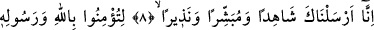
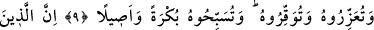
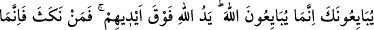
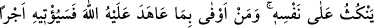
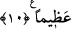

SANA BİAT EDENLER ANCAK
ALLAH’A BİAT ETMEKTEDİRLER
8. Şüphesiz biz seni, şâhid, müjdeleyici ve uyarıcı olarak gönderdik.
9. Ta ki (ey müminler!) Allah’a ve Resûlüne îmân edesiniz, Resûlüne yardım
edesiniz, O’na saygı gösteresiniz ve sabah akşam Allah’ı tesbih edesiniz.
10. Muhakkak ki sana biat edenler ancak Allah’a biat etmektedirler. Allah’ın eli
onların ellerinin üzerindedir. Kim ahdini bozarsa, ancak kendi aleyhine bozmuş olur.
Kim de Allah ile olan ahdine vefa gösterirse Allah ona büyük bir mükâfat
verecektir.
“Şüphesiz biz seni” ümmetin üzerine bir “şâhid” olarak gönderdik, anlamındadır.
Çünkü bir başka âyet-i kerîmede “Rasûlün de size şâhid olması için” (Bakara, 2/143)
ifâdesi geçmektedir. Yâni kendisini tasdik edenleri tasdik edecek, tasdik eder
görünenlerden bir kısmının yalancı olduklarını söylenecek ve yalanlayanların
yalanladığını doğrulayacaktır. Allah katında O (s.a.)’nun şâhidliği kabul edilecektir.
İster lehteki, isterse aleyhteki şâhidliği olsun farketmez. Tıpkı âdil bir şâhidin
şâhidliğinin hâkim tarafından kabulü gibi. Bu şâhidlik henüz gerçekleşmemiştir. Çünkü
Rasûlullah (s.a.), ancak, bu görevi kıyâmet gününde îfâ ettiği zaman şâhid olacaktır, ki
bu da rasüllük görevinden daha sonra olacaktır. Dolayısıyla bu görev takdirî bir görev
durumundadır. Fakat müjdeleyicilik ve korkutuculuk, risalet göreviyle beraberdir.[95]
“Müjdeleyici” gönderdik; yâni itâat edenlerin sevâba ve cennete nâil olacağını,
Allah’a kavuşmayı arzulayanların da Allah’a kavuşacaklarını müjdelemek için
gönderdik.
İsyan
edenlerin
azaba
ve
cehenneme
gireceklerini,
Allah’a
kavuşmayı
arzulamayanların ona kavuşamayacaklarını söyleyerek korkutasın, diye gönderdik.
Tevrat’ta şöyle bir ifâde vardır: Ey Peygamber! Biz seni, şâhid, müjdeleyici,
korkutucu ve ümmîlere bir muhafız olarak gönderdik. Sen benim kulum ve elçimsin.
Sana, mütevekkil adını taktım. Sen hırçın da, katı yürekli de değilsin. Sokaklarda tellâl